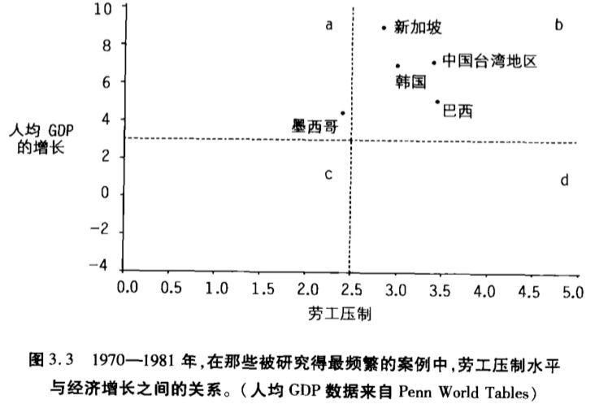
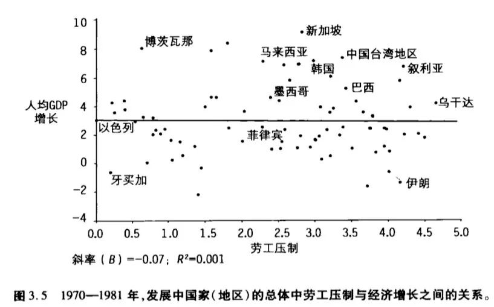

收录于合集
案例研究法是当代政治科学研究中最常见的方法之一，也是很多同学觉得自己能够驾驭且愿意尝试的研究方法。案例选择是案例研究设计中的重要一步，我们的案例选择将直接影响我们的结论。没有科学的案例研究，案例研究也将失去其进行因果推断的可信性，沦为举例“研究”。有选择的使用案例只能阐述一个理论，却无法证明或检验一个理论。倘若我们想通过案例研究提出验证一个理论，又该怎样进行案例选择呢？
一、案例选择第一禁忌：
根据因变量选择案例
在格迪斯的名作《范式与沙堡》中，她提出了一个问题，为什么流行一时的理论范式在如此快的更迭中被抛弃？这些快速更迭的理论像沙堡一样，并没有为知识进步构筑坚实根基。她所指出的重要现象是，在进行因果推断的过程中，“学者们没有忽视证据，但他们是在有选择的使用证据”。
根据因变量选择案例是案例选择的第一禁忌。所谓根据因变量选择案例，就是只将那些发生了我们所关注现象的案例纳入分析。例如，如果我们关注什么导致了革命，那么我们就只分析发生了革命的国家，并希望从中找出革命爆发的原因。这种做法会导致两种错误推断，一是将所选案例的共有特征当作我们所关心问题的原因；二是认为存在于我们所选定案例中的变量关系也存在于总体之中。格迪斯通过对劳工压制和经济增长理论的检验，具象化了根据因变量选择案例对我们研究结论所造成的影响。
劳工压制有助于经济增长是发展型国家理论中的重要组成部分。学者们利用新加坡、韩国、中国台湾、巴西和墨西哥等国家和地区的例子验证了这一理论。无一例外这些国家在1982年的债务危机之前都具有较高的经济增长率和较强的劳工压制水平。由此，分析者得出结论，劳工压制导致了经济增长。

当格迪斯使用更大的样本，既包括高速增长的国家，也包括低速增长的国家时。劳工压制与经济增长之间的关系则不存在了。所谓的理论，不过又成了一座难以长久的沙堡。

事实证明，如果案例选择建立在错误的基础上，我们将无法提出有意义的理论。科学的案例研究必须同时包括正面案例与负面案例。没有合理经验证据所谓理论研究，几乎无法为知识进步提供任何有效信息。
二、可能性原则：识别负面案例
不要根据因变量选择案例，在案例分析中必须要包含负面案例已经成为社会科学界较为明确的方法论原则。然而如何确定负面案例却仍然十分模糊。Mahoney & Goertz(2004)所阐释的可能性原则是我们识别负面案例的关键法宝。将负面案例纳入到我们所分析的案例中是完成科学案例选择的关键步骤。
一般而言，我们需要在四类案例中进行选择，分别是正面案例、负面案例、不可能但是发生了的案例以及不相关案例。我们以斯考切波的《国家与社会革命》为例，书中的基本观点是国家失败与农民反叛导致了社会革命。其中社会革命就是因变量，国家失败与农民反叛是自变量。不相关案例是指，既没有出现国家失败，也没有出现农民反叛的案例。我们理论所认定的对因变量有影响的自变量如果在案例中无一存在，那么这个案例就属于不相关案例。如果案例中存在任何一个根据我们理论可能导致所关注现象发生的自变量，那么这则案例就属于相关案例。
在相关案例中，如果发生了社会革命就属于正面案例，例如斯考切波书中的法国、俄国和中国革命。如果我们所关注的现象没有发生就属于负面案例，例如斯考切波书中德国、日本、英国。由于正面案例和其他类型案例的界限相对清楚，可能性原则就成了区分负面案例与不相关案例的关键法则。所谓的可能性就来自于自变量，即存在可能导致因变量发生的自变量。如果案例具备我们理论所设定的全部自变量但是却没有发生我们理论预设的结果，那么就属于不可能但是发生了的案例，比如发生了国家失败与农民反叛但是却没有发生社会革命的案例，这类案例越多，就说明我们的理论越站不住脚。
案例选择的基本流程应该是先通过自变量排除不相关案例。然后在相关案例中确定正面案例，再根据可能性原则确定负面案例。在探究诸如战争、革命、经济增长、政体变迁、社会运动这样的问题时，我们要尽可能全面地囊括正面案例与负面案例才能在知识积累上留下较为坚实的基础。
三、变量控制与案例选择
如果根据可能性原则，是否历史上发生过国家失败或农民起义的所有案例都要纳入到对社会革命的案例研究之中呢？这样的做法显然既不可能，也不可取。实际上在一定时空界限下，符合条件的案例的个数可能是很有限的；在严格控制变量的情况下，少数案例也能得出较有说服力的结果。
在一定时空界限中选择案例是最常见的控制变量的手段。如果我们想探究近代社会革命的原因，关注东周的国家崩溃与农民起义是没有意义的。在不同时空背景下，案例之间的差异性过大，现象演进的背景条件差别也过大，太容易出现遗漏变量问题，影响我们分析的有效性。18世纪的法国与东周几乎少有共同点，所处的国际环境也大相径庭。在这两个时空背景下，不论是国家崩溃、农民起义还是社会革命，都很难用相同的概念去界定。事实上很难有一种社会科学理论能够突破时空背景的限制。在一定时空界限下，我们的理论精度和有效性才能得到保障。
在变量控制模式下，较为常见的案例选择手段包括最大差异案例法和最大相似案例法。如果我们的理论关注从X到Y的关系。最大差异案例指的是案例之间除了X相同外其他有可能影响Y的因素都有很大差别，但是这些案例在Y上依然出现了相同或相近的表现，这能够说明X对Y能够造成实质性的影响。最大相似案例则指的是案例之间除了X不同外其他影响Y的因素都基本一致，但是案例间在Y上的表现仍然有很大差别，这说明案例在Y上的差异是由X导致的。
在自然实验基础上的案例研究，是将案例选择的变量控制发挥到极致。自然实验的逻辑接近于在案例选择中学者们常常使用的最大相似原则。通过完全外生的事件，我们的研究对象仿佛被随机分成了实验组和控制组，实验组和控制组除了我们所关心的X不同外，其他因素基本相同。例如有学者探究，在何种情况下，对宗教组织的认同会在社会上极具政治性。他利用布基纳法索和科特迪瓦的国界线形成了自然实验设计，分别以国界线两侧的一对乡村地区和一对城市地区作为分析案例。在科特迪瓦一侧，把宗教身份当作自己最重要身份的比例是布基纳法索一侧的三倍。在两地人口结构、族群构成、宗教信仰多样性等因素十分接近的情况下，不同的政治动员策略是导致宗教认同差异的根源。通过变量的控制，案例的同质性得到了最大程度上的保障，从而能够更好的体现自变量对因变量的作用。
四、困惑与讨论
围绕案例选择的主题，参加Social Science Club的同学又进行了深入的讨论。在此也摘出三则有代表性的问题，供读者思考，同时作为本篇结尾。
关注特例或典型的案例研究有没有其理论价值呢？这类研究显然是有它的价值的。尤其大量配合定量研究使用的案例研究经常见到对于典型案例、异常案例、高影响力案例的探讨。在有量化研究揭示变量间关系的基础上，这样的研究可以阐明量化研究所显示出的变量间关系在现实生活中是否实际存在，以及自变量是如何以及在何种程度上对因变量起到了作用。但是这样的案例研究并不能检验理论的有效性，也不能独立进行因果推断。此外，仅仅探讨一个或几个有趣案例的研究也是有意义的。这样的研究也可以用来阐明或质疑理论。毕竟我们不能指望每一项研究都提出一个新理论。只要我们不妄想从这类研究中得到完整的因果推断，对一些焦点问题的深入探讨仍然是很有意义的研究。我们研究的路径必须要和我们研究的目标相对应。
提一套观点，在每个观点下举几个例子的研究有没有它的价值呢？实际上通过头脑风暴得出一个理论，再通过举例子的方式验证自己观点的研究在今天并不少见。甚至我们很多人也习惯于写这类文章。毕竟这种写作不会出现数据跑不出想要的结果、案例不够了解的问题，经验事实的筛选过程完全是主观的。不过，在这些头脑风暴式论文中，我们仍然能够瞥见学者们的智慧与洞见。但是我们能把科学的进步建构在没有经验基础的头脑风暴之中吗。我们何不把这些智慧和洞见用有助于知识积累的方式进行验证呢？只有经验证的智慧的洞见才能更有效的转化为可靠的知识。
相比于使用大样本的量化研究，案例研究的价值何在呢？恐怕最极端的量化研究学者也难以否定案例研究的价值。有效的量化研究也有自身的规范，我们所关注的许多问题常常因为案例太少而不适合于展开量化分析。譬如对革命、现代国家形成等问题的研究。一旦我们施加了时空限制，实际上所需深入探讨的案例是有限的。而随着案例分析方法的不断进步，在许多问题上，通过对经验现象的深挖和长时段追踪，案例研究往往能够提出更为深刻的洞见。我们对知识深入度、真实性和具象化的要求决定了案例研究将永远在社会科学研究中占有一席之地。
参考文献：
Mahoney, James, and Gary Goertz. “The possibility principle: Choosing negative cases in comparative research.” American political science review 98.4 (2004): 653-669.
Seawright, Jason, and John Gerring. “Case selection techniques in case study research: A menu of qualitative and quantitative options.” Political research quarterly 61.2 (2008): 294-308.
芭芭拉·格迪斯：《范式与沙堡：比较政治学中的理论建构与研究设计》，陈子恪，刘骥等译，重庆大学出版社，2003年版
叶成城，黄振乾，唐世平：《社会科学中的时空与案例选择》，《经济社会体制比较》，2018年第8期
臧雷振，陈鹏：《比较政治学研究性偏差及其规避探索》，《政治学研究》，2016年第1期
特别鸣谢吉林大学行政学院Social Science Club-历史制度主义讨论会的老师与同学！
撰写：赵德昊
审读：贺竞超
编辑：康张城


政文观止
微信扫一扫赞赏作者 __赞赏
已喜欢，对作者说句悄悄话
取消 __
发送给作者
发送
最多40字，当前共字
上一页 1/3 下一页
长按二维码向我转账
受苹果公司新规定影响，微信 iOS 版的赞赏功能被关闭，可通过二维码转账支持公众号。